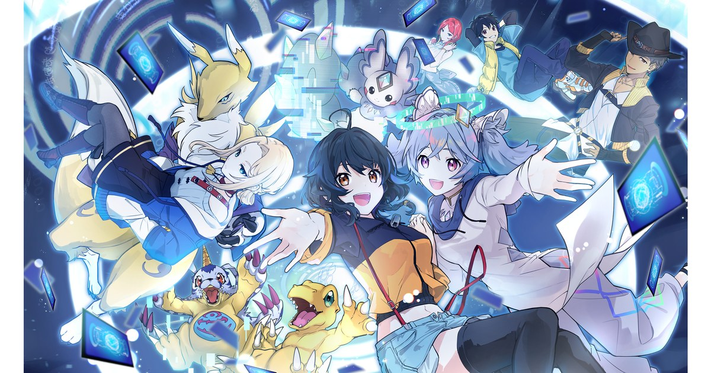

Digimon Alysion is out now — Bandai's free card battler launches in 183 countries
Bandai Card Games launched Digimon Alysion, the free-to-play mobile version of the Digimon Card Game, on iOS and Android in 183 countries and regions — after more than 450,000 pre-registrations, with Ranked Matches unlocking November 26.

Digimon's card game just went fully mobile. Bandai Card Games launched Digimon Alysion on November 24, bringing the Digimon Card Game to smartphones as a free-to-play app on iOS and Android, live in 183 countries and regions at launch.
The launch had a real runway behind it: more than 450,000 players pre-registered before release. That put Alysion in the rare position of arriving with an audience already waiting, and Bandai marked the occasion with a limited-time launch event, Battle Carnival Dukemon Ver., running now.
What the game is
Alysion is a digital adaptation of the physical Digimon Card Game, built around real-time card battles and a story mode. It's free to download with in-app purchases, and it supports multiple languages across its launch regions.
Ranked Matches — the competitive ladder — unlock on November 26, two days after launch, so the first day is for learning the ropes and building a deck before the leaderboard opens.
Why it matters
Card games live or die on whether anyone's actually playing them, and a 183-country day-one launch with nearly half a million pre-registrations is about as strong a start as a mobile card game gets. The Digimon Card Game has been quietly building a real-world player base for years; Alysion is Bandai's bet that the same game works as a phone-first habit.
For Digimon fans, the pitch is simple: the card game you know, in your pocket, with a ranked ladder opening this week.
Sources: DIGIMON ALYSION Officially Launches in 183 Countries and Regions Worldwide! (PR Newswire / Bandai) · Digimon Alysion now available (Gematsu) · Digimon Officially Drops Brand-New Free Game Available Now (CBR) · Digimon Alysion Now Available Worldwide On IOS And Android, Surpasses 450,000 Pre-Registrations (Noisy Pixel)
Gear up: Razer — mice, keyboards, headsets and laptops.